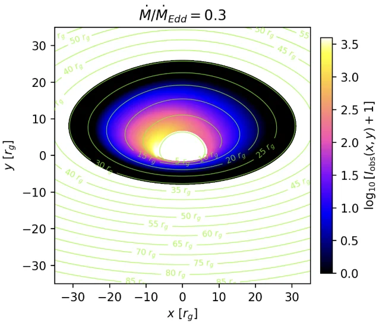
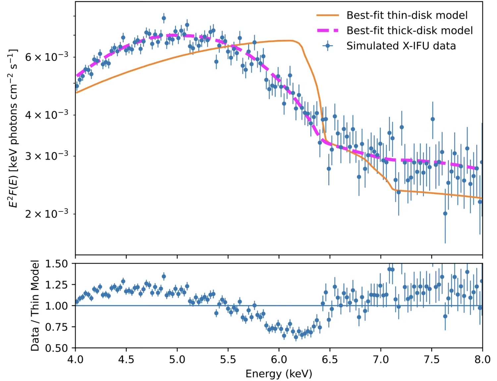
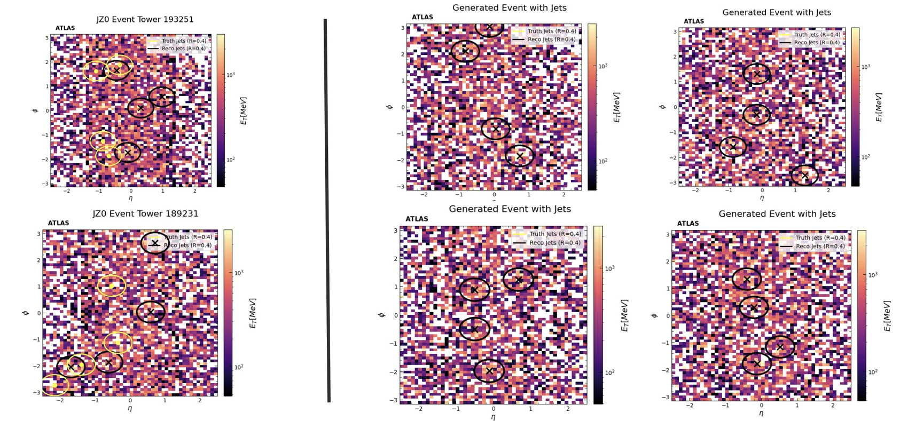
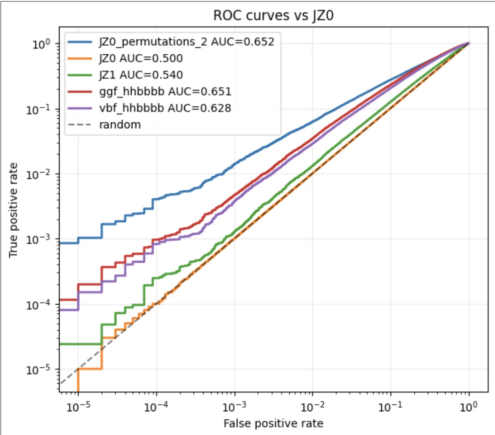
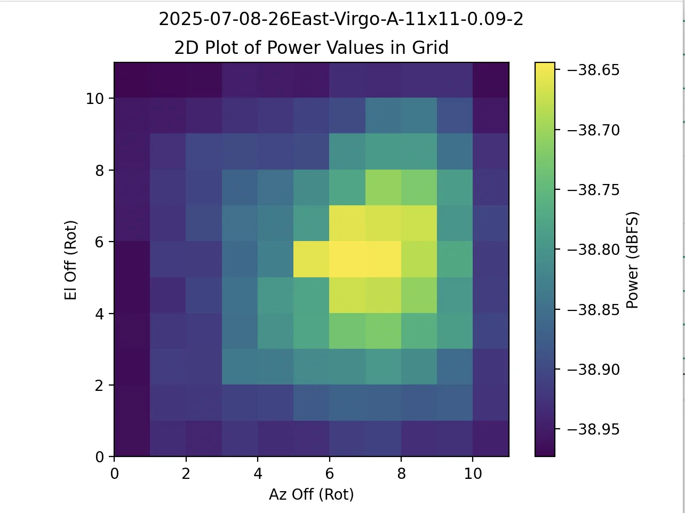

Physics and mathematics student, with a minor in computer science.
I plan to pursue a Ph.D. in physics and study extreme astrophysical systems by combining electromagnetic observations with gravitational-wave data. I’m especially interested in what X-ray observations of accreting black holes can tell us about gravity.
My projects have taken me from radio telescopes to particle-physics data and black-hole models.
Finite-thickness accretion disks
Wake Forest University · Summer 2026–present
Astrophysics
I use relativistic ray tracing and X-ray spectral fits to study how disk thickness changes the spectra used to estimate black-hole properties. I’m measuring when thin-disk models bias parameters such as spin, inclination, and coronal height.

Ray tracing shows which parts of a thick disk are illuminated and visible.

In this simulated Athena observation, the thick-disk fit follows Fe-K structure more closely.
With Dr. Alejandro Cárdenas-Avendaño, Dr. Javier García, and Dr. Joanna Piotrowska-Karpov. Manuscript in preparation.
Normalizing flows for calorimeter data
University of Geneva & CERN · Spring 2026
Particle physics
I tested normalizing flows and cylindrical convolutional autoencoders on sparse HL-LHC calorimeter data, comparing generated events and anomaly scores for background and simulated di-Higgs events.

Calorimeter events and samples from the trained model.

Likelihood scores separated signal and background only weakly.
Advised by Dr. Ioannis Xiotidis.
Automating radio-telescope scans
Pisgah Astronomical Research Institute · Summer 2025
Radio astronomy
I wrote Python programs to automate raster scans with PARI’s 26-meter radio telescopes and map radio sources. Students later used the scanning tools to observe a pulsar and analyze its signal.

An 11 × 11 raster scan of Virgo A from the 26-East telescope.
Extreme mass-ratio inspirals
Wake Forest University · Fall 2025
I built Python tools to evolve inspiral orbits and compare gravitational-wave predictions from Peters’ equations and a 2.5 post-Newtonian model.
With Dr. Cook, I used Julia to solve the TOV equations, reconstruct rotating-star models, and plot mass–radius relationships.
WORK & CAMPUS ROLES
Work
Engineering Intern
Goldfinch Sensor Technologies and Analytics · Spring & Summer 2025
I built Python and image-analysis workflows for automated detection and supported machine-learning projects in medical imaging, beef-fat segmentation, satellite imagery, and burn-severity analysis. I also trained staff to use image-segmentation tools for a USDA-funded project.
Physics Tutor
Wake Forest University
I work one-on-one with students on physics coursework and problem-solving.
Trip Leader
Wake Forest Outdoor Pursuits
I lead beginner whitewater trips and stargazing outings for students.
CAMPUS & OUTREACH
Community engagement
Society of Physics Students
President · Wake Forest University
I organize events for physics students and help plan stargazing and astronomy outreach.
Alpha Phi Omega
Wake Forest University
Service and volunteer activities through the campus chapter.
PARI Summer Camp
Camp counselor · Summers 2024–2025
I taught astronomy activities and supervised middle- and high-school campers during overnight sessions.
Summer camp at PARI.An archival plate from the PARI collection.Hiking in the red rocks.On the river with Outdoor Pursuits.
ASTROPHOTOGRAPHY
Night skies
Click the photo or use the arrows to see the rest.